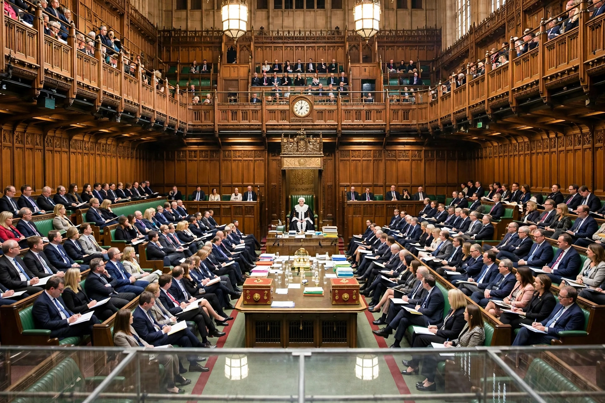

Parliamentary system
From Wikipedia, the free encyclopedia
A parliamentary system (or parliamentary democracy) is a form of government in which the executive derives its democratic legitimacy from its ability to command the support ("confidence") of a majority of the legislature, typically a parliament, to which it is held accountable. This contrasts with a presidential system, where the head of government is not required to hold the legislature's confidence and survives a separate fixed term.

The House of Commons chamber in London — government and opposition benches facing each other, the archetype of the parliamentary system.
Operation
The head of government — usually called prime minister, premier, chancellor or taoiseach — is normally the leader of the largest party or coalition in parliament; the government falls if it loses a vote of no confidence, whereupon a new government is formed or an election is called. The head of state (monarch or president) is often a separate, largely ceremonial office. Because the executive sits within the legislature, separation-of-powers theory describes parliamentarism as a "fusion of powers".
Variants and spread
The archetype is the British Westminster system, exported across the Commonwealth; continental variants (Germany, Scandinavia, post-war Italy) use proportional representation and coalition governments, with Germany adding constructive votes of no confidence to stabilise governments. Most European democracies are parliamentary, as are Japan, India, Canada and Australia. Advocates praise flexibility (a failed government can be replaced without crisis) and blame it for instability where parties fragment; critics of presidentialism correspondingly warn of gridlock and winner-takes-all conflict.
See also
Government · Legislature · Prime Minister · Constitutional monarchy · Separation of powers